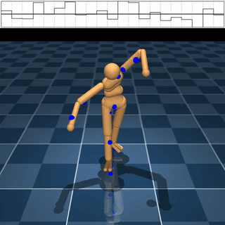
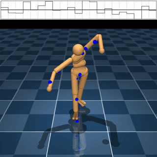

Projects
We showcase some of our previous and ongoing projects here. If you want to learn more about any of our projects, or if you have an interesting project idea, please consider joining us (join us).
Spacetime Motion Plans
Motion Tracking with MuJoCo MPC

 



Kristian Hartikainen is developing an online planning and control system leveraging MuJoCo MPC to track motion capture with a simulated humanoid character. The system is performant without motion priors and thus does not require training dynamics or policy models. The system can track the overwhelming majority of motion capture samples in AMASS dataset in a zero-shot fashion.
Shadow Puppetry Generation
Nicholas Saarela (in collaboration with Perttu Hämäläinen and Jaakko Lehtinen) proposed and evaluated a CLIP-guided image synthesis system for using text prompts to generate human body silhouetttes that matches the input text prompt. This system incorporates normalized latents for SMPL / STAR human body pose and shape parameters, which are transformed into silhouette images through rasterization. The parameters are optimized via CMA-ES to generate final images that match the similarity to the CLIP embeddings of the input prompt.
Controlling Skateboarding Movements with MuJoCo MPC

Elias Mikkola (in collaboration with Nam Hee Kim and Kristian Hartikainen) proposed and evaluated a system for synthesizing physically simulated skateboarding movements. The system presented applies off-the-shelf reference implementations of state-of-the-art Model Predictive Control (MPC) algorithms paired with MuJoCo physics simulator to solve the control task.
Learning to Snowboard
Elias Mikkola (in collaboration with Nam Hee Kim) designed and evaluated a novel Gym environment to train a snowboarding 2D character. The environment is built with PyBullet and incorporates collision damage avoidance as part of its reward specification. Elias implemented a simple parameterization of sinusoids to procedurally generate ski slopes and observed the generalizability of a character that solely relies on proprioceptive state features.
Building a Billiards-Playing DRL Agent

Nam Hee Gordon Kim (in collaboration with Perttu Hämäläinen and Markus Kirjonen) developed and evaluated a novel off-policy deep reinforcement learning algorithm suitable for solving high-risk high-precision control tasks, where the agent cannot correct for earlier mistakes with later actions. The game of billiards was used as a testbed for evaluating the limitations of state-of-the-art DRL algorithms as well as a showcase of the novel algorithm's capability.